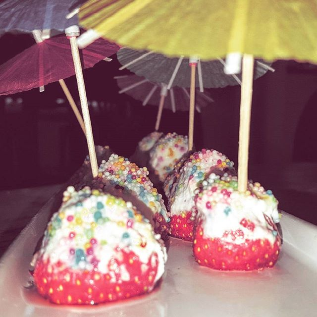

Product
Taart 1
Een heerlijke aardbeiencupcake met een wit glazuur erop voor de ultieme smaakbeleving. We gebruiken spikkels erover om het extra krokant te maken en mooie parasollen voor de sier.
Taart 2

Deze lekkere aardbei heeft een wit glazuur erover heen voor de extra smaak. We gebruiken spikkels of witte chocola (eigen keuze) om nog een extra smaak toe te voegen. Hierdoor smaakt het heel anders dan een normale aardbei.
Taart 3

Deze heerlijke mix van aardbeientaarten is de must-have voor feestjes en andere gelegenheden. Er zijn genoeg taarten voor ongeveer 30 personen, waardoor iedereen van heerlijke taart kan genieten. We gebruiken soms ook bosbessen.
Taart 4
Deze heerlijke tulband is voor iedereen een genot. We gebruiken witte glazuur met kleine versieringen erop om de extra smaakbeleving te kunnen realiseren. De bosbessen en aardbeien aan de zijkanten zorgen voor de mooie look.